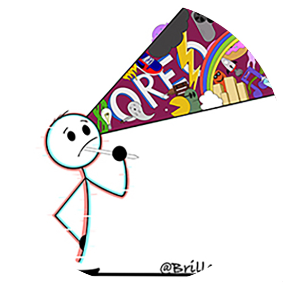

About
Gallery
Contact

You can click on the image above to take a look at my gallery.
Welcome to my page. My names Austin Briller and I made this page as a virtual portfolio for all of my artwork. I will hopefully continue to build on this page as I begin to do and finish more piece of art. If you are interested in having a piece done or getting a print of a already created piece of art, visit the contact page and get in touch with me. Hope to hear from you soon!